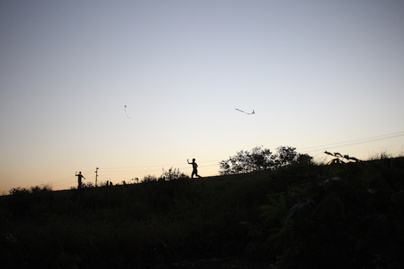

Africa needs open source:
Unlocking the research potential of the developing world through R
databrew recently held a 12 week course in R at the Centro de Investigação em Saude de Manhiça, a health research facility in Southern Mozambique. The class was a huge success: enthusiastic students, a fun and collaborative class atmosphere, and lots of data.
The students learned a ton, but so did I (the teacher). Specific to the subject of this post, my lessons learned were that:
- Licensing fees and processes pose an even bigger burden on researchers in the African context than in the U.S., Canada, or Europe.
- Most students had almost no "formal" access software (through an institution) or materials for learning about software.
- Most students were familiar with at least one commercial statistical software (Stata, SPSS, Excel, SAS), and many had a copy (often pirated) of one.
- Most students' familiarity with these statistical softwares was relatively low, mainly due to a lack of guidance/teaching.
- Many students were surprised by (a) the fact that R is free, and (b) the fact that so much can be done in R (maps, web apps, etc.).
- Nearly all students said they'll continue working in R after the course ends.


What's the take-away?
R has the potential to have a major positive impact on productivity and innovation in the sphere of African health research. But there are two pre-requisites to this transformation taking place: more exposure to R at the institional level, and more education resources for R at the individual level.